Research
Alice
Alice is een robot die ontworpen is speciaal voor ouderen. Door deze robot zou de eenzaamheid bij ouderen moeten verminderen en de zelfredzaamheid juist moeten vergroten.
In 2015 is Alice ontwikkeld door de Vrije Universiteit van Amsterdam met als doel de levenskwaliteit van ouderen te verbeteren. Alice is deels in staat om spontaan te reageren, deels via geprogrammeerde vragen en deels gestuurd door een team van developers achter de computer. Er werd geëxperimenteerd bij drie verschillende vrouwen boven de 80 jaar. Eerst was hun reactie ‘Ik wil geen robot in huis’, maar later zei één van hen ‘Alie is mijn vriendin’.
Later, in 2016, heeft Deloitte samen met de Vrije Universiteit van Amsterdam een 2.0 versie gemaakt. Dit werd een sociale robot die geheel autonoom is en spontaan reageert. Eerst hebben zij verschillende onderzoeken gedaan welke eigenschappen Alice eigenlijk moet bezitten om geaccepteerd te worden door de ouderen (bv het nieuws voorlezen, muziek afspelen, iemand bellen en een gesprek aangaan).
Ik vind deze robot heel goed ontworpen, omdat mensen zich door deze robot echt minder eenzaam kunnen voelen en eenzaamheid is, vooral bij ouderen, steeds vaker een probleem. Als z'n robot dit probleem (gedeeltelijk) op kan lossen is dat super.
Bekijk het filmpje van Alice
Tessa
Tessa is een robot om structuur in een dag aan te brengen, vooral gericht voor mensen met dementie of cognitieve beperking. De taken die Tessa uitspreekt kunnen andere mensen, bijvoorbeeld familie of mantelzorger, op afstand in een app/website instellen.
Je kan bijvoorbeeld Tessa iets laten vragen over of je al hebt gekeken in je brievenbus of dat je het koffiezetapparaat al hebt aangezet, omdat er zo meteen visite komt. Doordat de taken worden ingevoerd door iemand die de gebruiker waarschijnlijk goed kent, zorgt dit ervoor dat de vragen en taken goed aansluiten bij de gebruiker.
Deze robot is gemaakt in samenwerking tussen verschillende organisaties, o.a. Ministerie van Volksgezondheid, welzijn en sport en Vilans hulpmiddelenwijzer.
Ik vind deze robot een goed ontwerp voor mensen met dementie of een andere cognitieve beperking, omdat menen zo toch structuur in hun dag kunnen krijgen maar er niet de hele tijd een mantalzorger of iemand anders in de buurt hoeft te zijn. Voor deze mensne is het namelijk ook makkelijker en sneller om Tessa iets te laten vragen dan er bijvoorbeeld heen te gaan of meerdere keren op een dag te bellen.
Bekijk het filmpje van Tessa
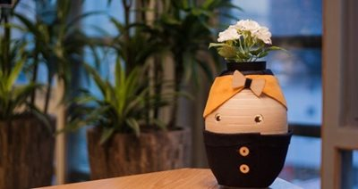
There's Wally
Een andere vooral grappige robot die ik ben tegen gekomen was een robot die je helpt zoeken naar Wally. Iedereen kent denk ik wel, die plaatjes met super veel getekende personen en jij moet Wally proberen te vinden. Met deze robot hoef je niet meer lang te zoeken, want hij wijst hem gewoon voor je aan!
Deze robot is gemaakt door Redpepper. De robotarm wordt bestuurd door een bibliotheek van Python en hij maakt gebruikt van OpenCV om gezichten uit de foto te vinden. De gezichten worden naar de Google Auto ML Vision-service gestuurd, die ze allemaal vergelijkt met het getrainde Waldo-model. Als er een match van 95% (0,95) of hoger wordt gevonden, wordt de robotarm geïnstrueerd om zich uit te strekken tot de coördinaten van het overeenkomende gezicht en wijst ernaar. De robot doet er ongeveer 4,45 seconde over om Wally te vinden.
Deze robot is natuurlijk meer voor de fun, dan echt om iemand met iets te helpen, maar ik vind het idee van de robot wel creatief bedacht!
Bekijk het filmpje hoe Wally wordt gevonden
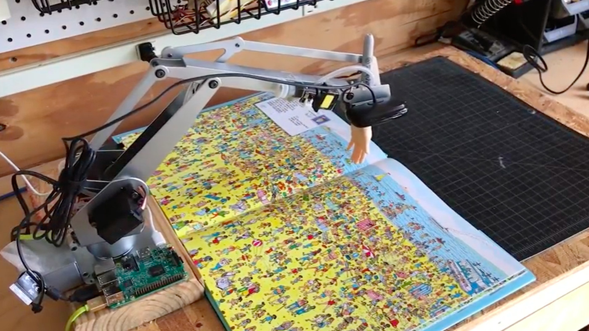
Tinkering
Arduino en Processing
Voor het tinkeren ben ik eerst verder gegaan met de combinatie van Arduino en Processing. Ik heb met behulp van een if statement in beide programma's ervoor gezocht dat wanneer je over het vierkantje gaat je een blije smiley ziet op het ledje van 8x8, en als je niet over het vierkantje gaat met je muis je een verdrietige smiley ziet op het ledje.
Bekijk het filmpje


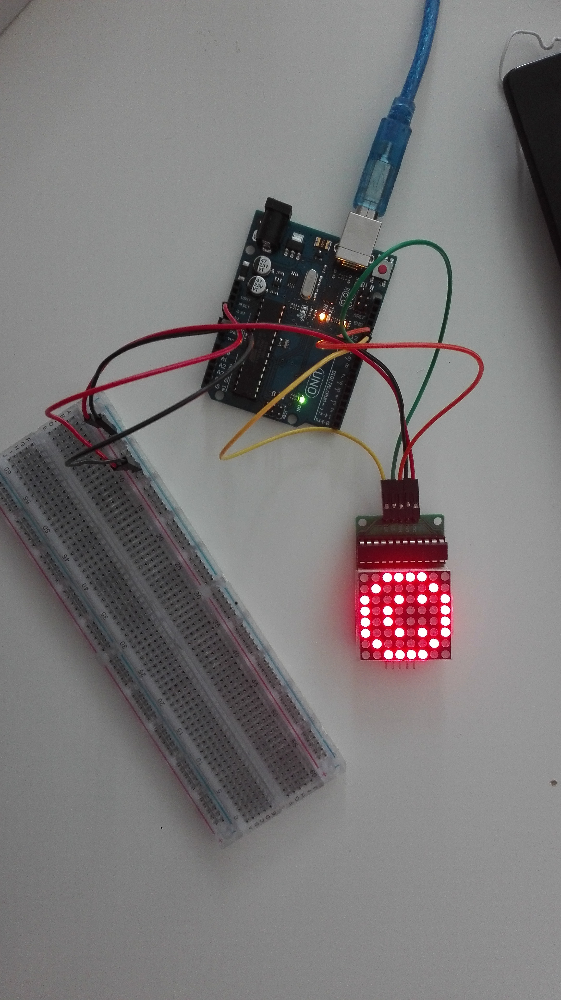
Arduino, Processing met twee servo's
Nadat het eerste experiment met Arduino en Processing was gelukt wilde ik nog iets anders uitproberen. Ik wilde iets meer experimenteren met de servo die in het pakket van Arduino zit. Ik wilde deze van tempo laten veranderen wanneer je met je muis over de driehoek zou gaan.
Bekijk het filmpje met de servo


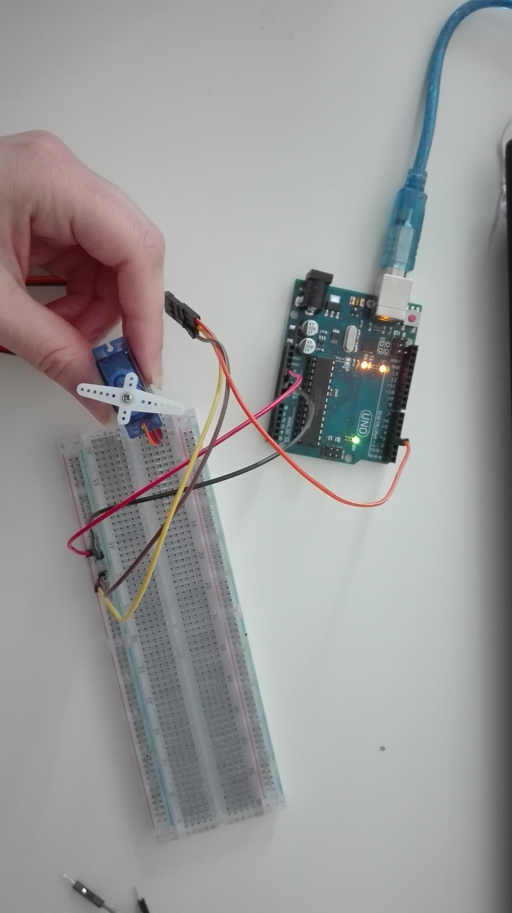
Daarna heb ik geprobeerd om twee servo's te gebruiken. Wat nog best lastig was om een circiut te maken met twee servo's.Ik wilde hiermee testen omdat ik misschien al een leuk idee had voor mijn eindontwerp van deze challenge. Ik heb geprobeerd om te twee servo's om en om van elkaar te laten bewegen. Wanneer het vierkant van Processing rood is, als je mouse er niet over heen gaat, beweegt de linker servo, wanneer je over het vierkantje gaat met je cursor beweegt de rechter servo. Ook heb ik er een soort constructie van gebouwd, alleen is deze iets minder geworden dan ik had gehoopt. Ik heb namelijk twee ijsstokjes gevestigd op beide servo's om zo bijvoorbeeld een product heen en weer te laten brengen door de servo's (je moet alleen het product wel zelf op de andere servo zetten). Dit moet dan een soort prototype voorstellen die in het grot gemaakt zou kunnen worden om zwaardere producten heen en weer te verplaatsen.
Bekijk het filmpje van het prototype


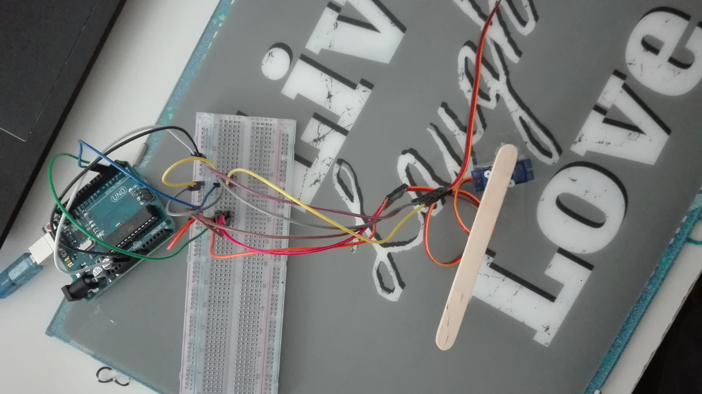
Adobe XD
Als laatste experiment bij tinkering heb ik ervoor gekozen om te experimenteren met Adobe XD. Ik heb een teddybear gemaakt die verschillende soorten interacties heeft. Zo kan je bijvoorbeeld klikken op het hoofdje en beweegt hij deze. Ook kan je door middel van spraak, hem een bericht terug laten geven. Zeg 'Hallo' en hij vraagt hoe het met je gaat.
Ik heb deze teddybear gemaakt omdat je zo gezellig met iemand interactie hebt als je even alleen bent of bijvoorbeeld met iemand wil spelen.
Bekijk het filmpje voor alle interacties

Design and Build & Showcase
Voor de challenge van Artificial Creatures heb ik een prototype gemaakt van een robot hond waarmee je interactief kan spelen. Ik heb deze robot gemaakt omdat niet iedereen een echte hond mag hebben thuis, en zo heb je toch een soort hond als huisdier waarmee je kan spelen! Ook zorgt deze robot ervoor dat je je minder alleen voelt en dat je toch nog met iemand kan spelen.
Als eerst heb ik een constructie gebouwd. Eerst had ik dit geprobeerd met karton alleen dat werkte echt niet, dus ben uiteindelijk overgegaan op ijsstokjes. Daarna heb ik twee Servo's op de onderkant van de constructie vastgemaakt, die dienen als pootjes, en heb ik de code hiervoor geschreven. Op de construcite heb ik het board vastgezet waar later het circuit met alle draadjes opkwam.
Toen de basisconstructie af was heb ik als eerst de sensor eropgezet en de daarbij behorende code geschreven. Daarna heb ik de rest van de code en het circuit af gemaakt. Als laatste heb ik van de robot nog een echte hond proberen te maken door een hondenhoofd te tekenen en hem een soort vachtje te geven.
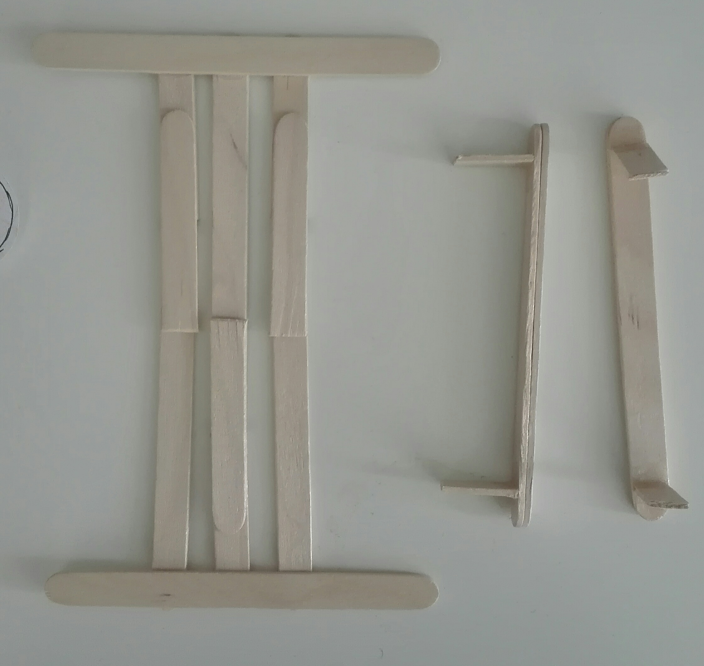
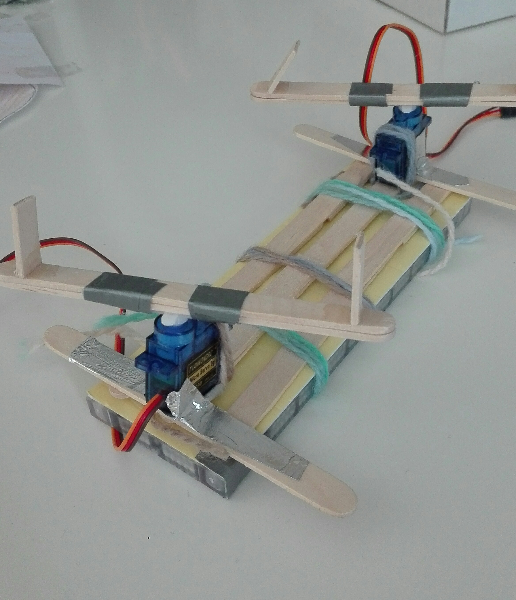
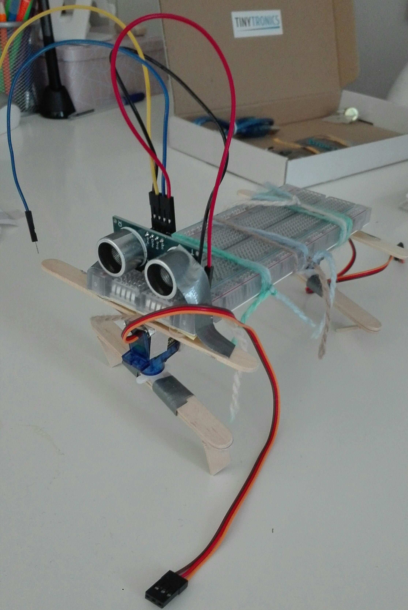
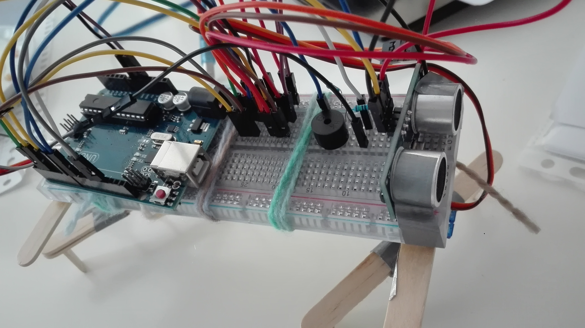
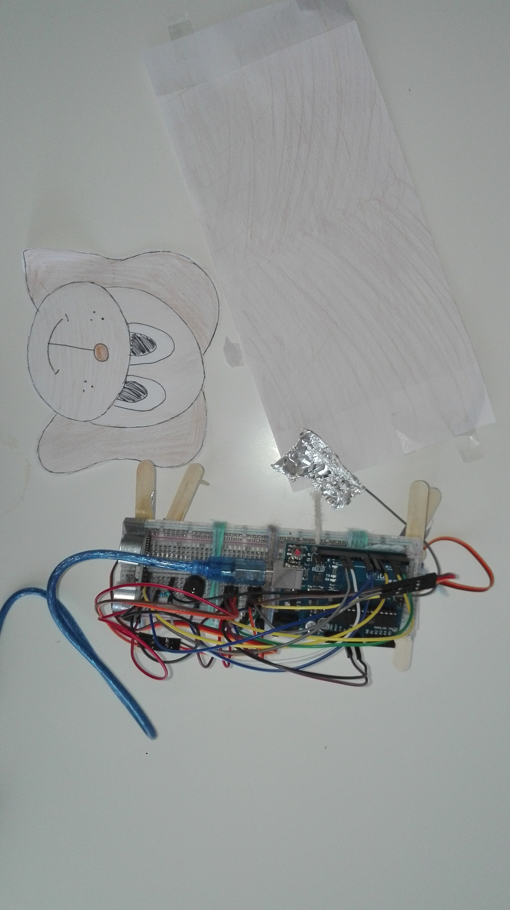
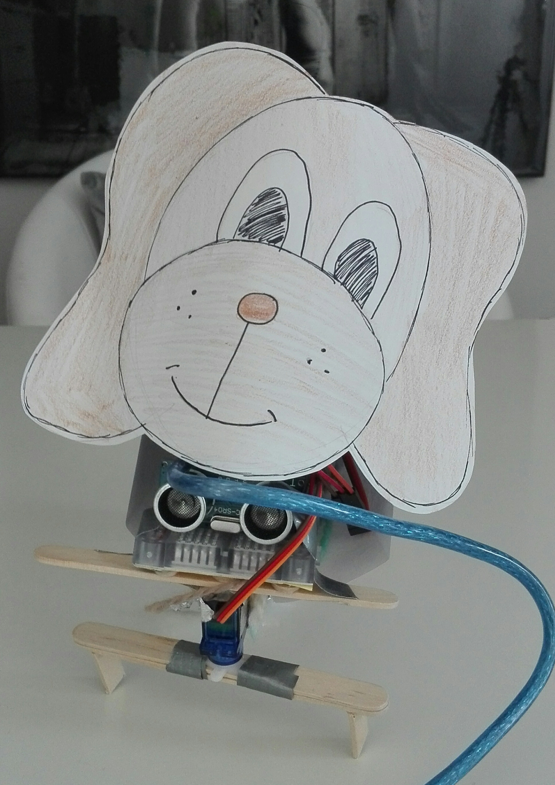
Deze robot hond heeft uiteindelijk de volgende eigenschappen gekregen: Hij kan zelf lopen (mits hij aan de stroom staat), stopt vanzelf als de sensor iets detecteerd op 30 cm afstand of dichterbij en maakt daarbij een piep geluidje, en wanneer je zijn staart (zachtjes) pakt maakt bij nog een extra geluidje.
Bekijk hier het fimpje van mijn hond! (Zorg dat het geluid (hard) aanstaat.)
Ook heb ik nog geprobeerd om de code van tinker opdracht 2 te gebruiken. Dit heb ik wel geprobeerd maar de constructie kon het niet aan als de hond sneller zou gaan lopen wanneer je via Processing de hond sneller wilde laten lopen. Ook zou de hond dan aan de laptop vast moeten zitten wat het lopen ook niet echt makkelijker maakt. Dit heb ik daarom uiteindelijk niet toegevoegd bij mijn eindontwerp.
Mijn uiteindelijke code en circuit:
Reflect
Artificial Creatures in het algemeen
Ik denk dat Artificial Creatures erg nuttig kunnen zijn in ons leven. Vooral bijvoorbeeld de robots die gemaakt worden voor ouderen om ze te helpen met dagelijkse bezigheden of robots die er voor zorgen dat mensen zich minder alleen voelen zijn er goed vind ik. Vooral nu voelen mensen zich misschien best alleen en als je door z'n robot mensen weer blij en gelukkig kan maken is dit een goed initiatief. Wel denk ik dat veel mensen nog aan dit idee moeten wennen, maar ik denk dat wanneer ze de voordelen uiteindelijk zien, dat ze er geen moeite meer mee hebben. Dit zag je namelijk ook bij de robot Tessa, uit het research gedeelte.
Mijn eindproduct
Mijn eindontwerp moet er ook voor zorgen dat mensen zich minder alleen gaan voelen. Wel is dit ontwerp meer gemaakt voor de fun dan echt om je te helpen met bijvoorbeeld dagelijkse dingen. Ook zou ik eigenlijk nog het ontwerp iets willen uitbreiden, dat je er bijvoorbeeld tegen kan praten en dat hij dan reageert (wat je wel zag bij de gemaakte teddybear), maar dat lag niet iets boven mijn vaardigheden en gebruikte materiaal.
De gebruikte technologiën
Ik heb bij het tinkeren en eindproduct verschillende technieken gebruikt: Processing, Arduino en Adobe XD. Vooral met Adobe XD heb ik al vaker gewerkt dus dit lukte vrij goed. De combinatie van Processing en Arduino vond ik wel wat aan de lastige kant. Maar gelukkig door de opdrachten uit de workshop kreeg ik dit steeds beter onder de knie, waardoor dit uiteindelijk wel is gelukt. Het bouwen van het circuit van mijn robot hond was wel een stukje lastiger dan ik van te voren dacht. Op een gegeven moment had ik namelijk zo veel draadjes lopen dat ik het overzicht een beetje kwijt was. Daarom duurde dit uiteindelijk best wel lang.


 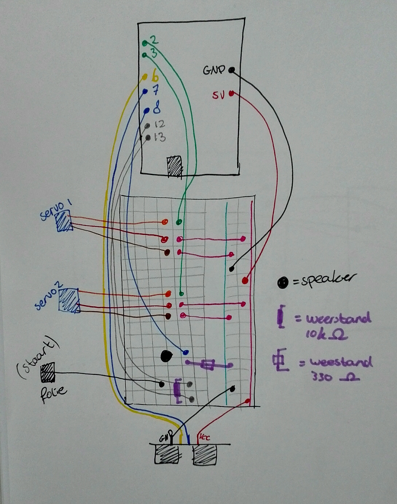
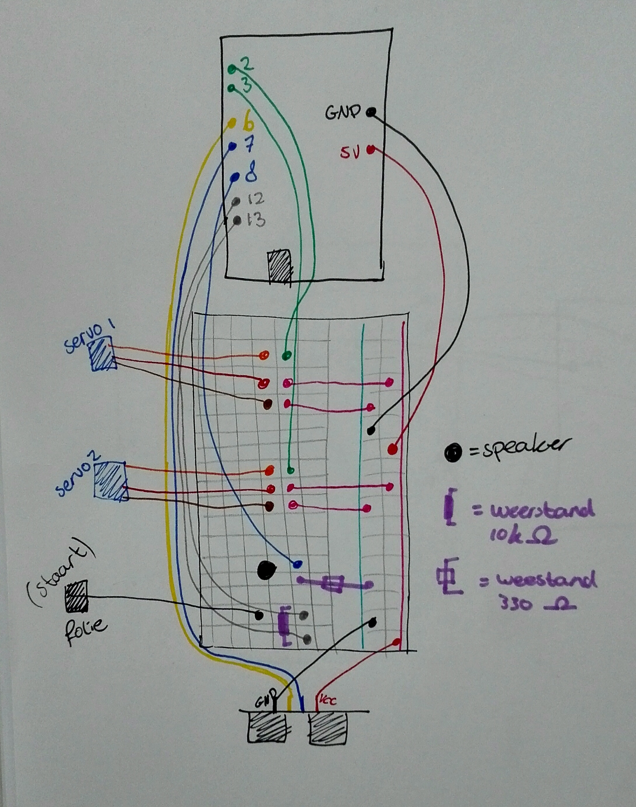